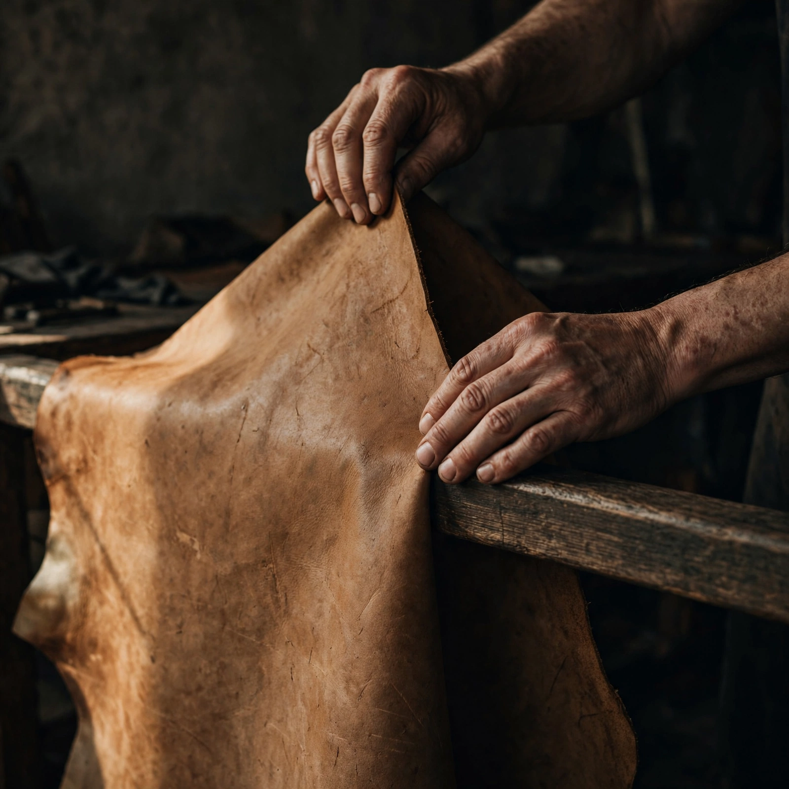
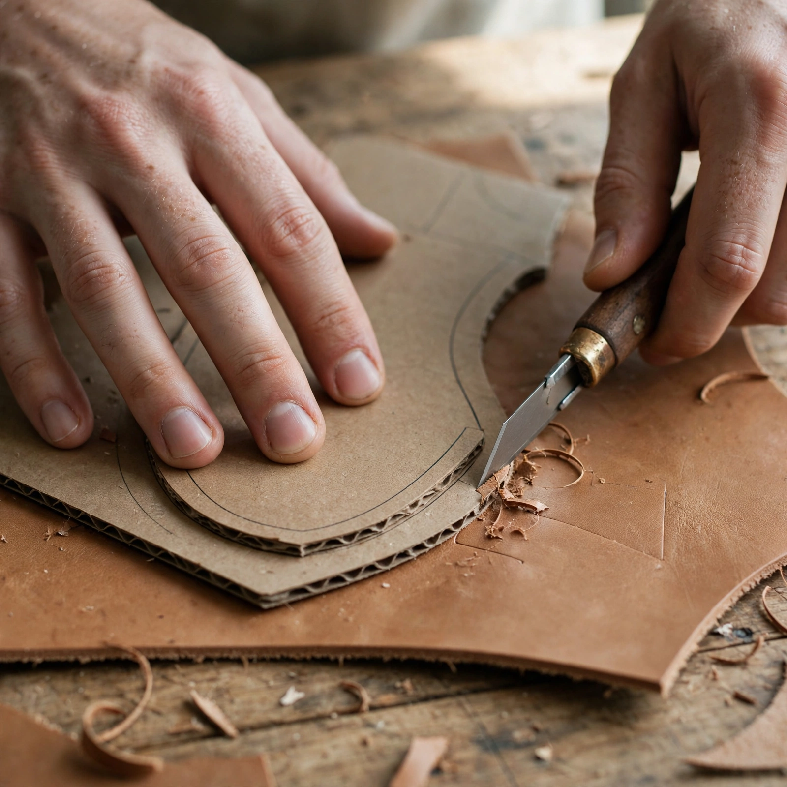
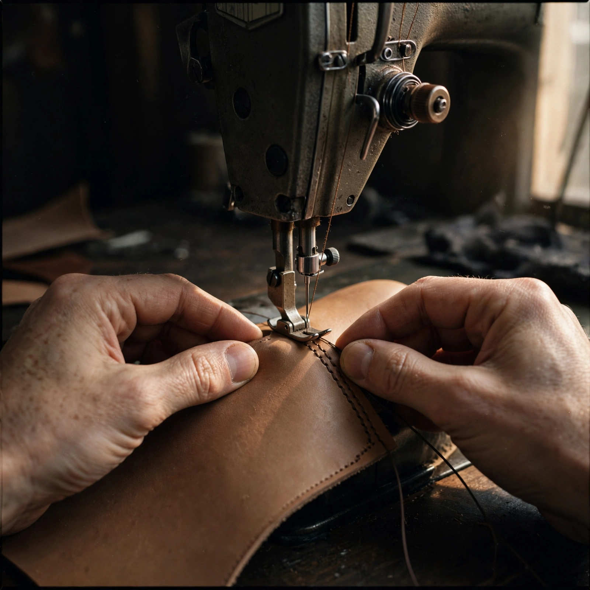
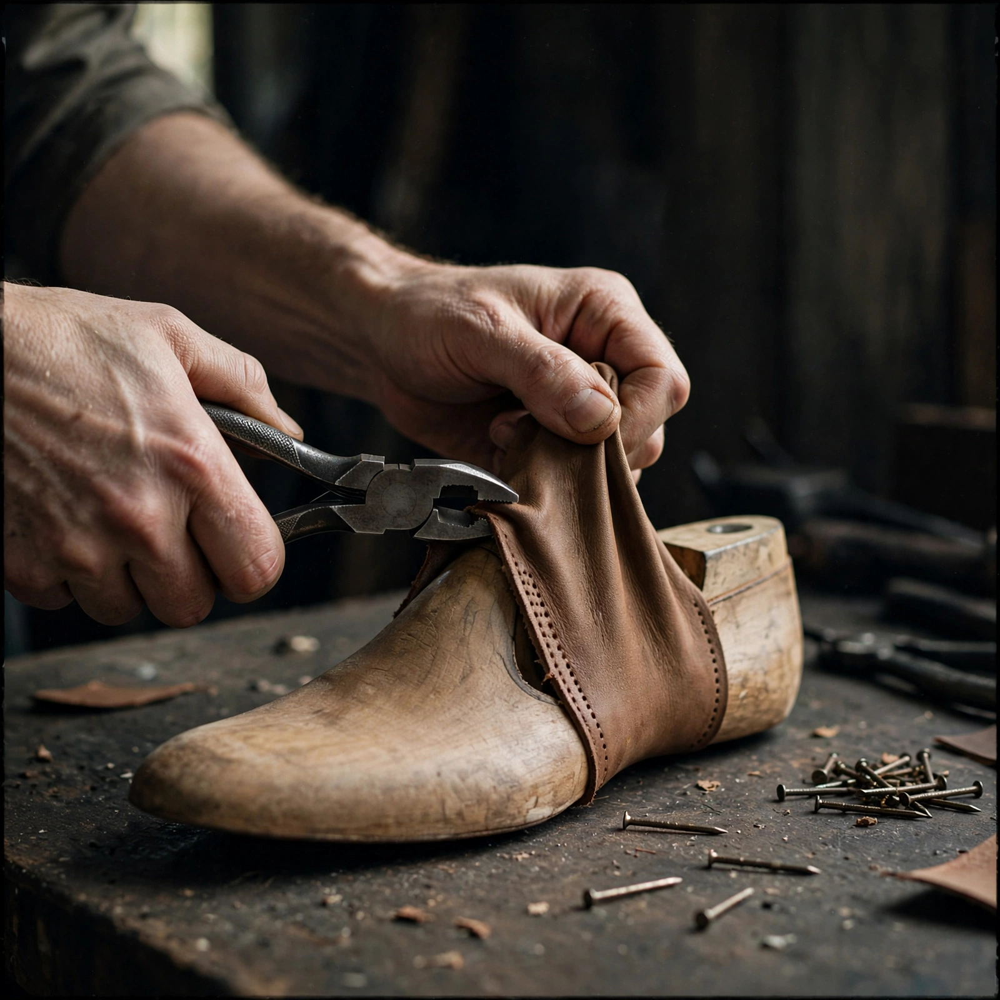
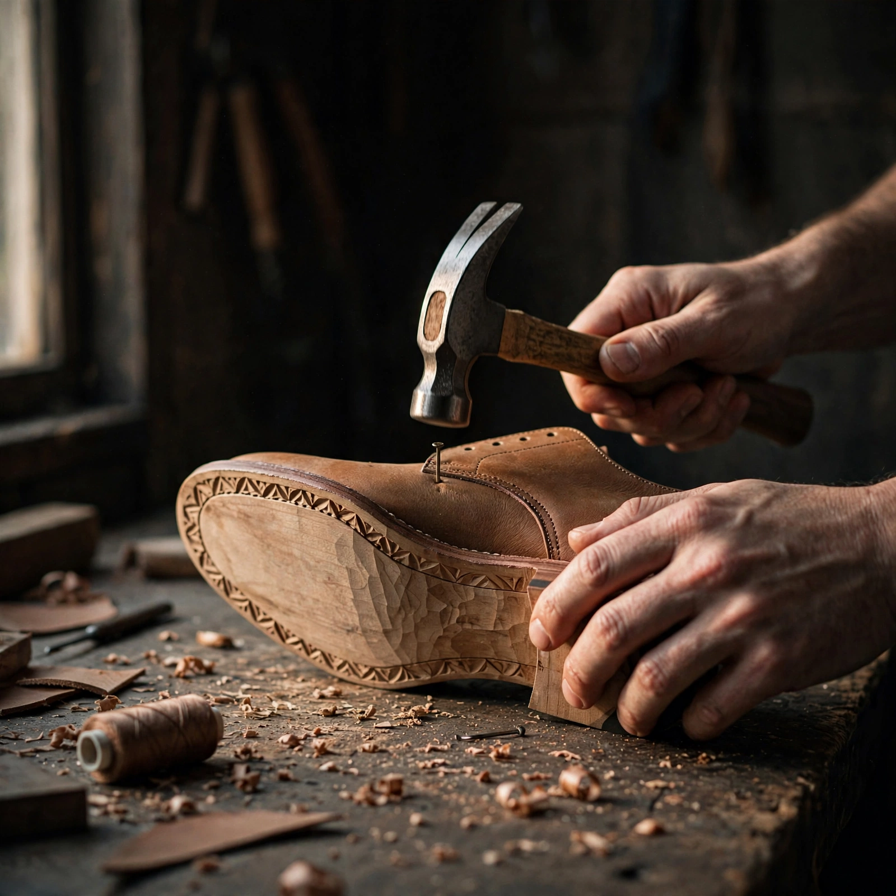
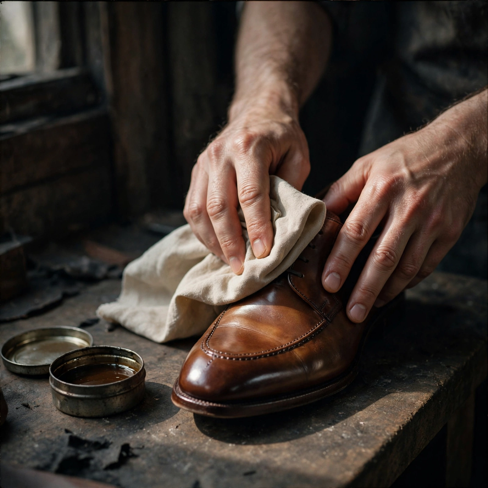

—
—
—
—
Material
Ukuran
Panduan ukuran & cara ukur kaki
| EU | Panjang kaki | ID (perempuan) | ID (laki-laki) |
|---|---|---|---|
| 36 | 22,5 cm | 35 | — |
| 37 | 23,2 cm | 36 | 37 |
| 38 | 24,0 cm | 37 | 38 |
| 39 | 24,7 cm | 38 | 39 |
| 40 | 25,5 cm | 39 | 40 |
| 41 | 26,2 cm | 40 | 41 |
| 42 | 27,0 cm | 41 | 42 |
- Tempelkan telapak kaki di kertas, berdiri dengan beban tubuh penuh.
- Tandai dari tumit sampai ujung jari paling panjang.
- Ukur kedua kaki — pakai angka yang lebih panjang.
- Ragu di antara dua ukuran? Ambil yang lebih besar; sol kayu melentur mengikuti.
Tujuh tahap, satu pasang
Kulit mentah sampai takik terakhir — lewat tangan yang sama, dari awal sampai kotak.

Sortir kulit
Panel dipilih satu per satu; yang cacat dipakai untuk barang kecil.

Potong pola
Sembilan potongan kulit veg-tan, dipotong tangan satu-satu.

Jahit upper
Jahit sisik untuk sambungan yang menahan tarikan, mesin untuk yang panjang.

Bentuk di last
Didiamkan 48 jam di atas last kayu supaya hafal bentuk kaki.

Pasang sol
Sol sonokeling ditempel dan dipaku tangan dari bawah.

Finishing
Minyak biji rantas, pewarna alami, poles kain sampai naik patina.

Pahat sol
Takik terakhir di tepi — tapak jadi cekam, tanda tangan tiap pasang.